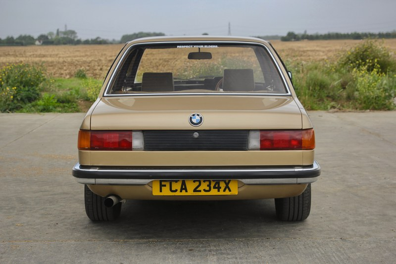
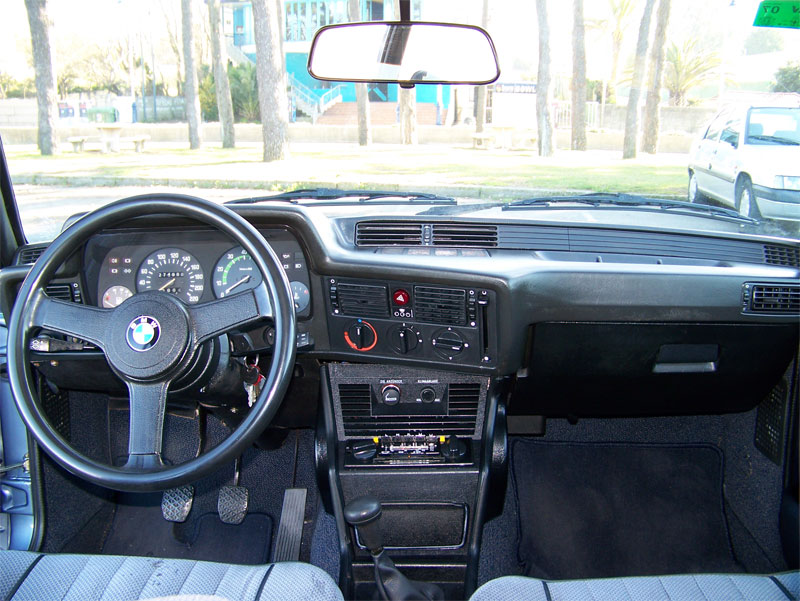
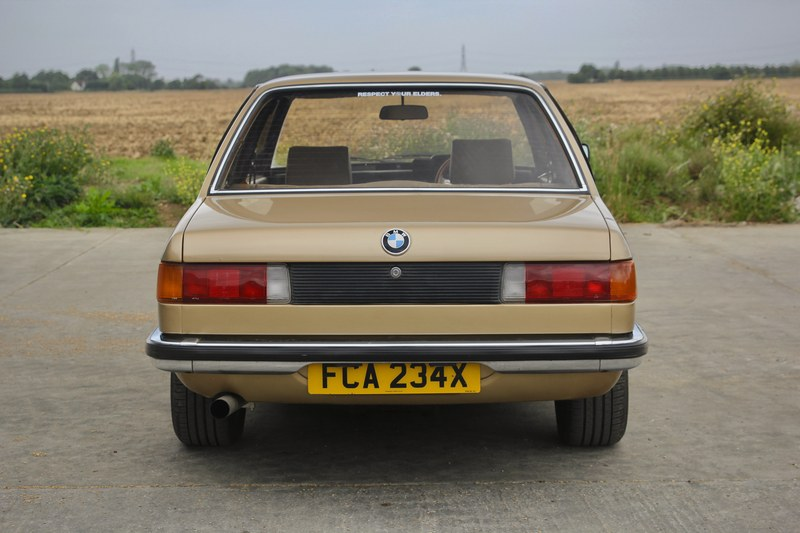
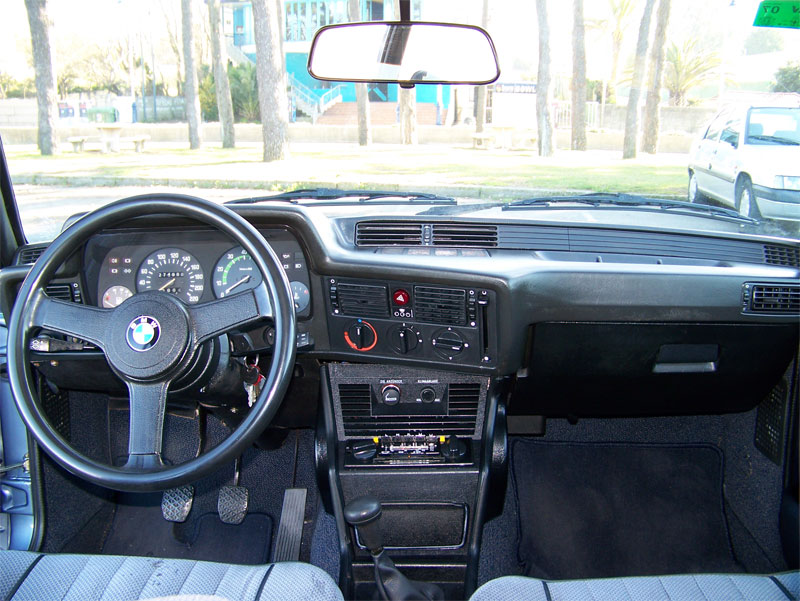

BMW E21
The first-generation 3 Series (1975 - 1983)
 



Car Specifications
- Engine Options: 1.6L Inline-4, 1.8L Inline-4, 2.0L Inline-4, 2.3L Inline-6
- Power: 75 - 143 hp
- Torque: 120 - 205 Nm
- Transmission: 4-speed manual, 5-speed manual, 3-speed automatic
- Top Speed: 190 km/h (118 mph)
- 0-60 mph: 9.3 seconds (323i)
- Fuel Economy: 8.0 - 12.0 L/100 km (29 - 20 mpg)
- Production Years: 1975 - 1983
- Body Style: 2-door Sedan
- Drive Type: Rear-Wheel Drive
- Weight: 1,030 - 1,200 kg
About the BMW E21
The BMW E21, the original 3 Series, marked the beginning of a legacy. Designed as a successor to the BMW 02 Series, the E21 introduced the concept of a compact executive car with sporty dynamics and premium features.
With its timeless design, responsive handling, and iconic kidney grille, the E21 quickly became a favorite among drivers who appreciated performance and elegance in a compact package.
Image Gallery


Key Features
- Performance: Balanced chassis and engine options tailored for driving pleasure.
- Design: Clean, timeless lines that defined BMW's design language.
- Heritage: The first model to establish the 3 Series as the benchmark in its class.
Technical Information
The BMW E21 lineup featured a range of engines to suit diverse needs:
Engine Codes and Iterations
- M10: 1.6L-2.0L Inline-4, up to 125 hp, used in 316, 318i, 320i
- M20: 2.0L-2.3L Inline-6, up to 143 hp, used in 320/6, 323i
Conclusion
The BMW E21 laid the foundation for what the 3 Series represents today: a blend of performance, luxury, and everyday usability. It remains an iconic model cherished by enthusiasts worldwide.